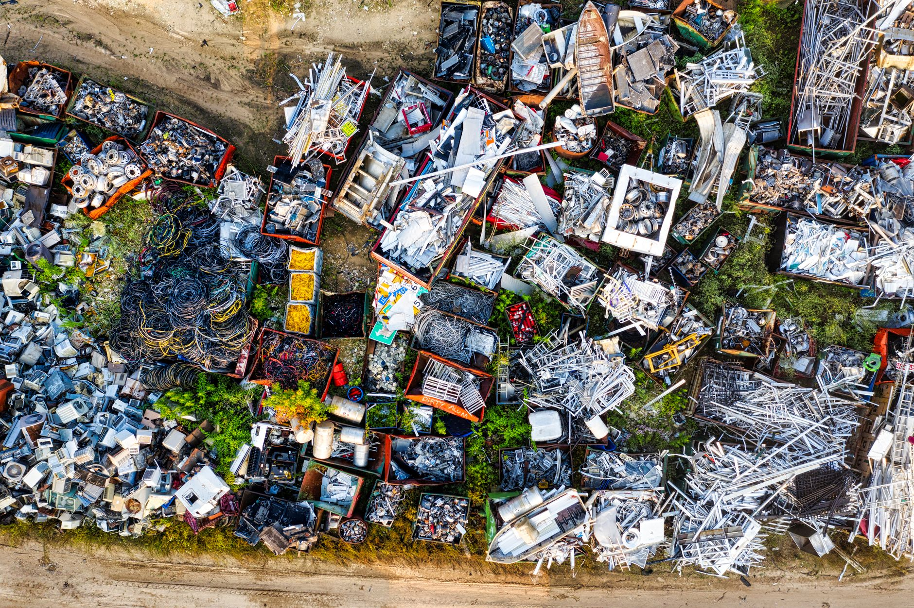

도시광산 희귀금속 회수, 분쟁광물 대안으로 급부상

콩고민주공화국 루바야 광산 붕괴 사고로 최소 200명 이상이 사망한 것으로 집계되면서 분쟁광물 리스크가 글로벌 공급망의 뇌관으로 다시 부상했다. 루바야 광산은 전세계 탄탈럼(탄탈) 생산량의 약 15%를 담당하는 핵심 광원으로, 이번 사고는 단순한 인명 피해를 넘어 글로벌 전자·반도체 산업의 소재 공급망에도 직접적 충격을 주고 있다.
탄탈럼은 스마트폰·반도체·항공우주 부품에 필수적으로 쓰이는 희귀금속으로, 콩고·르완다 등 정치적으로 불안정한 지역에 매장이 집중돼 있다. '분쟁광물'로 지정된 배경도 바로 이 때문이다. 공급망 투명성 규제가 강화되는 가운데, 이번 광산 붕괴는 1차 채굴 의존도를 낮추고 도시광산(Urban Mining) 중심의 순환 공급망 구축을 촉진하는 계기로 작용할 전망이다.
도시광산이란 전자 폐기물(e-Waste)에서 금·은·팔라듐·탄탈럼 등 희귀금속을 추출·재활용하는 산업을 뜻한다. 폐 스마트폰 1톤에서 회수 가능한 금은 약 300g, 탄탈럼은 150g 수준으로, 1차 광석 채굴 대비 에너지 소모량이 70% 이상 적고 탄소 발생량도 크게 낮다.
국내에서는 한민에코텍이 충남 예산 3공장을 최근 착공하며 전자 폐기물 희귀금속 회수 사업을 본격화했다. 이 회사는 폐 PCB(인쇄회로기판)와 폐 커패시터에서 탄탈럼, 금, 구리 등을 회수하는 습식 정련 기술을 보유하고 있으며, 신규 공장 가동 시 연간 처리 용량이 기존 대비 3배 이상 증가할 것으로 예상된다.
업계 관계자는 '도시광산 소재가 분쟁광물 프리(Free) 인증을 받을 수 있어 ESG 경영을 강화하는 글로벌 완성품 기업들의 수요가 빠르게 늘고 있다'며 '단가 경쟁력도 갈수록 높아지고 있다'고 설명했다. 실제로 도시광산 회수 탄탈럼의 가격은 1차 채굴 제품 대비 약 10~15% 낮은 수준을 형성 중이다.
미국은 최근 북한·중국·러시아산 탄탈럼에 대한 수입 금지를 공식 확정했다. 이 조치는 분쟁광물 규제와 겹쳐 서방 기업들의 공급처 재편을 더욱 가속화하고 있다. 대체 공급원으로는 호주, 캐나다, 르완다(분쟁 지역 외) 광산과 함께 도시광산이 가장 현실적인 선택지로 꼽힌다.
글로벌 전자 폐기물 발생량은 연간 6000만 톤을 넘어섰으며, 그중 공식 재활용 루트로 처리되는 비율은 20% 미만에 불과하다. 나머지 80% 이상이 매립되거나 비공식 경로로 처리되면서 막대한 자원이 낭비되고 있다. EU와 미국은 이를 해결하기 위한 e-Waste 재활용 의무화 법안을 잇따라 강화하고 있다.
한국 정부도 자원순환 산업 육성과 핵심광물 국산화 전략의 일환으로 도시광산 기술 개발 지원을 확대하고 있다. 산업부는 2026년 기준 도시광산 분야 R&D 지원 예산을 전년 대비 30% 이상 증액한 것으로 알려졌다. 충주 핵심광물 국산화 시범단지도 도시광산 회수 소재를 원료로 활용하는 방안을 검토 중이다.
국제 희귀금속 가격 측면에서도 변동성이 커지고 있다. 루바야 광산 사고 이후 탄탈럼 현물 가격은 ㎏당 120달러에서 145달러로 단기 급등했으며, 시장은 향후 공급 차질 우려를 반영해 추가 상승 가능성을 열어두고 있다.
도시광산 업계 외에도 신소재 대체 연구가 활발히 진행되고 있다. 한국재료연구원 등에서는 탄탈럼 커패시터를 대체할 수 있는 하프늄 기반 세라믹 커패시터 연구를 진행 중이며, 상용화까지는 5~7년이 소요될 것으로 전망된다.
투자 측면에서는 도시광산·자원 재활용 관련 ETF와 개별 종목에 대한 관심이 높아지고 있다. 특히 분쟁광물 리스크 회피 수요가 ESG 투자 확대와 맞물리면서 도시광산 관련 기업들의 기업 가치 재평가 가능성이 커지고 있다는 분석이 나온다.
전문가들은 도시광산이 단순한 재활용을 넘어 핵심광물 공급망의 구조적 대안으로 자리 잡는 데 향후 3~5년이 결정적 시기라고 강조한다. 기술 고도화와 함께 회수 소재의 순도·규격 표준화가 상용화의 핵심 과제로 꼽힌다.